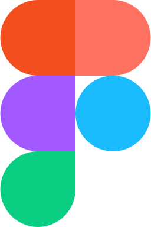

郑大吉
郑润楷 · 28岁 · 本科 · 广东揭阳
视觉创意管理者 / 直接向创始人汇报
熟悉以下工具链，能评估技术方案与工时

Figma
微信 ZRK_KAI
15766323766
5年
发布会行业经验
2021 — 2026
2021 — 2026
4人
设计小组
直接管理
直接管理
60%
小组贡献传统
业务营收
业务营收
0→1
项目管理落地
从概念到交付
从概念到交付
项目交付
- 对外沟通设计需求、确认设计标准，协调平面/二维/三维工作推进，把控交付标准与时间线
- 对内统筹分工与交付节点、承接商务需求并匹配团队资源
- 负责二维动效执行，能评估动效等技术方案与工时，不做不切实际的承诺
组织建设
- 项目交付后主动制作结案报告，进行项目复盘与知识沉淀
- 洞察团队运行痛点，探索建立团队 SOP
- 协助更新公司知识库（如管理方法论、年度 showreel）
- 参与团队薪酬体系设计，协助创始人推进内部管理机制
团队管理
- 定期与成员 1 对 1 沟通，进行团队复盘，与组员共同进步
- 跟进组员成长，例如通过作品包装、团队参考库迭代等实际项目提升成员美感与专业能力